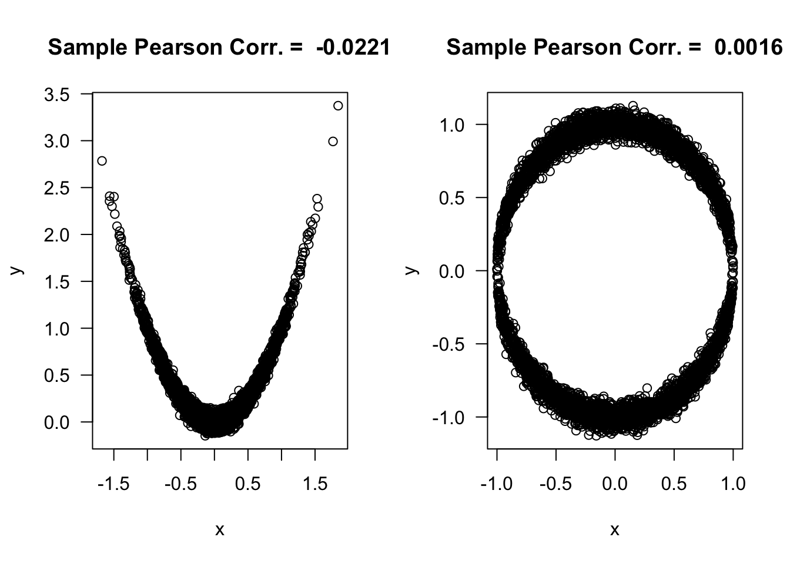
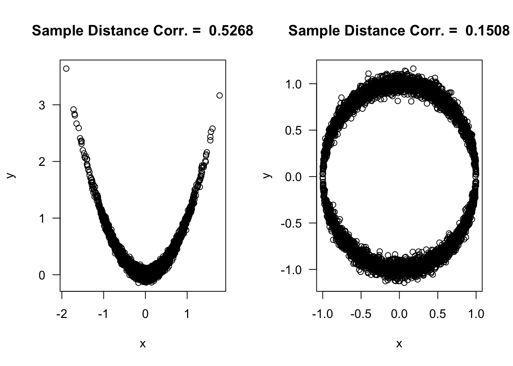

Chapter 6 U-Statistics
6.1 Definition
Suppose we have observations \(X_{1}, \ldots, X_{n}\).
U-statistics are a family of statistics used to estimate quantities that can be written as \[\begin{equation} \theta = E\Big\{ h(X_{1}, \ldots, X_{r}) \Big\} \tag{6.1} \end{equation}\]
The U-statistic \(U\) which estimates (6.1) is given by the following formula: \[\begin{equation} U = \frac{1}{{n \choose r}} \sum_{c \in \mathcal{C}_{n,r}} h(X_{c_{1}}, \ldots, X_{c_{r}}) \tag{6.2} \end{equation}\]
The function \(h\) is usually called the kernel of the U-statistic. We will assume the kernel is symmetric.
The integer \(r\) is called the order of the U-statistic. Typically, \(r = 2\), or \(r = 3\) at most.
In (6.2), \(\mathcal{C}_{n,r}\) denotes the set of all \({n \choose r}\) combinations of size \(r\) from the set \(\{1, \ldots, n\}\).
For example, if \(n = 3\) and \(r = 2\) then \[\begin{equation} \mathcal{C}_{n, r} = \{ (1,2), (1,3), (2, 3) \} \nonumber \end{equation}\]
For many common U-statistics \(r=2\) in which case (6.2) can be written as \[\begin{equation} U = \frac{2}{n(n-1)} \sum_{i=1}^{n}\sum_{j=i+1}^{n} h(X_{i}, X_{j}) \end{equation}\]
6.2 Examples
- A wide range of well-known statistics can be represented as U-statistics.
6.2.1 Example 1: The Sample Mean
The sample mean is actually an example of a U-statistic with \(r = 1\).
Choosing \(h(x) = x\) means that the corresponding U-statistic is \[\begin{equation} U_{m} = \frac{1}{n} \sum_{i=1}^{n} X_{i} \end{equation}\]
Taking the expectation of \(h(X_{1})\) gives the parameter that \(U_{m}\) is estimating \[\begin{equation} E\{ h(X_{1}) \} = E\{ X_{1} \} = \mu \nonumber \end{equation}\]
6.2.2 Example 2: The Sample Variance
The sample variance is actually another example of a U-statistic. In this case, \(r = 2\).
To show why this is the case, choose the kernel \(h(x_{1}, x_{2})\) to be \[\begin{equation} h(x_{1}, x_{2}) = \frac{1}{2}(x_{1} - x_{2})^{2} \end{equation}\]
The expectation of this kernel is \(\sigma^{2} = E\{ h(X_{1}, X_{2}) \}\) because \[\begin{eqnarray} E\{ h(X_{1}, X_{2}) \} &=& \frac{1}{2}\Big[ E(X_{1}^{2}) - 2E(X_{1})E(X_{2}) + E(X_{2}^{2}) \Big] \nonumber \\ &=& \frac{1}{2}\Big[ \sigma^{2} + \mu^{2} - 2\mu^{2} + \sigma^{2} + \mu^{2} \Big] \nonumber \\ &=& \sigma^{2} \tag{6.3} \end{eqnarray}\]
Also, by using formula (6.2), this choice of kernel generates the sample variance at its U-statistic: \[\begin{eqnarray} U_{var} &=& \frac{1}{{n \choose 2}} \sum_{c \in \mathcal{C}_{n,2}} h(X_{c_{1}}, X_{c_{2}}) = \frac{2}{n(n-1)}\sum_{i=1}^{n} \sum_{j=i+1}^{n} \frac{1}{2} (X_{i} - X_{j})^{2} \nonumber \\ &=& \frac{2}{n(n-1)}\sum_{i=1}^{n} \sum_{j=1}^{n} \frac{1}{4}(X_{i} - X_{j})^{2} \nonumber \\ &=& \frac{1}{2n(n-1)}\sum_{i=1}^{n} \sum_{j=1}^{n} \{ (X_{i} - \bar{X})^{2} - 2(X_{i} - \bar{X})(X_{j} - \bar{X}) + (X_{j} - \bar{X})^{2} \} \nonumber \\ &=& \frac{1}{2n(n-1)}\sum_{i=1}^{n} n(X_{i} - \bar{X})^{2} + \frac{1}{2n(n-1)}\sum_{j=1}^{n} n(X_{j} - \bar{X})^{2} \nonumber \\ &=& \frac{1}{n-1}\sum_{i=1}^{n} (X_{i} - \bar{X})^{2} \end{eqnarray}\]
Typically, the variance has the interpretation of \(\sigma^{2} = E\{ (X_{i} - \mu)^{2} \}\). That is, \(\sigma^{2}\) measures the expected squared deviation of \(X_{i}\) from its mean.
Given the form of the U-statistic (6.3), we can also interpret the variance in the following way: if we select two observations \(X_{i}\) and \(X_{j}\) at random, the expected squared distance between \(X_{i}\) and \(X_{j}\) will be \(2\sigma^{2}\).
You can see this through the following computer experiment.
n <- 50000
xx <- rlogis(n, location=2, scale=0.75)
diff.sq <- rep(0, 5000)
for(k in 1:5000) {
idx <- sample(1:n, size=2)
diff.sq[k] <- (xx[idx[1]] - xx[idx[2]])^2
}
round(var(xx), 3)## [1] 1.845## [1] 1.8176.2.3 Example 3: Gini’s Mean Difference
Gini’s mean difference statistic is defined as \[\begin{equation} U_{G} = \frac{1}{{n \choose 2}} \sum_{i=1}^{n}\sum_{j=i+1}^{n} | X_{i} - X_{j} | \nonumber \end{equation}\]
This is a U-statistic with \(r=2\) and kernel \[\begin{equation} h(X_{1},X_{2}) = | X_{1} - X_{2} | \end{equation}\]
The parameter that we are estimating with Gini’s mean difference statistic is: \[\begin{equation} \theta_{G} = E\Big\{ \Big| X_{1} - X_{2} \Big| \Big\} \end{equation}\]
Gini’s mean difference parameter \(\theta_{G}\) can be interpreted in the following way: If we draw two observations at random from our population, \(\theta_{G}\) represents the expected absolute difference between these two observations.
The Gini coefficient \(\theta_{Gc}\) is a popular measure of inequality. It is related to the mean difference parameter via \[\begin{equation} \theta_{Gc} = \frac{ \theta_{G}}{ 2\mu }, \end{equation}\] where \(\mu = E( X_{i} )\).
- Exercise 6.1. Compute the Gini coefficient \(\theta_{Gc}\) when it is assumed that
- \(X_{i} \sim \textrm{Normal}( \mu, \sigma^{2})\), for \(\mu > 0\).
- \(X_{i} \sim \textrm{Exponential}(\lambda)\), (Hint: The difference between two independent Exponential random variables has a Laplace distribution).
6.2.4 Example 4: Wilcoxon Signed Rank Statistic
The Wilcoxon signed rank test statistic is related to the following U statistic \[\begin{equation} U_{WS} = \frac{2}{n(n-1)}\sum_{i=1}^{n}\sum_{j=i+1}^{n} I\Big( X_{i} + X_{j} \geq 0 \Big) \end{equation}\]
\(U_{WS}\) is a U-statistic of order \(2\) with kernel \[\begin{equation} h(x, y) = I\Big( x + y \geq 0\Big) \end{equation}\]
Hence, \(U_{WS}\) can be interpreted as an estimate of the following parameter \[\begin{equation} \theta_{WS} = P\Big( X_{i} + X_{j} \geq 0 \Big) = P\Big( X_{i} \geq -X_{j} \Big) \end{equation}\]
If the distribution of \(X_{i}\) is symmetric around \(0\), \(\theta_{WS}\) will be equal to \(1/2\).
Recall that the Wilcoxon signed rank test is designed to detect distributions which are not symmetric around \(0\).
The Wilcoxon signed rank statistic \(T_{n}\) that we defined in Chapter 3 had the following formula \[\begin{equation} T_{n} = \sum_{i=1}^{n} \textrm{sign}( X_{i}) R_{i}( |\mathbf{X}| ) \end{equation}\]
Some extra algebra can show that \[\begin{eqnarray} T_{n} &=& n(n-1) U_{WS} + 2\sum_{i=1}^{n} I(X_{i} > 0) - \frac{n(n+1)}{2} \nonumber \\ &=& n(n-1) U_{WS} + 2 S_{n} - \frac{n(n+1)}{2} \tag{6.4} \end{eqnarray}\] where \(S_{n}\) is the sign test statistic defined in Chapter 3.
For large \(n\), \(T_{n}\) is largely determined by \(U_{WS} - 1/2\). Hence, a “large” value of \(U_{WS} - 1/2\) will lead to rejection of the one-sample null hypothesis discussed in Section 3.3.
- If you want to derive (6.4) (though you don’t need to know how), I think it is helpful to note the following \[\begin{eqnarray} I( X_{(i)} > 0)R_{(i)}(|\mathbf{X}|) &=& \sum_{j=1}^{n} I( X_{(i)} > 0)I(|X_{(i)}| \geq |X_{j}|) = \sum_{j=1}^{n} I(X_{(i)} \geq |X_{j}|) \nonumber \\ &=& \sum_{j=1}^{n} I(X_{(i)} \geq |X_{(j)}|) = \sum_{j=1}^{i} I(X_{(i)} \geq -X_{(j)}) \nonumber \\ &=& \sum_{j=1}^{i} I(X_{(i)} + X_{(j)} \geq 0) \nonumber \end{eqnarray}\]
6.3 Inference using U-statistics
By using a large-sample approximation, you can construct a confidence interval for your U-statistic parameter of interest \(\theta\) where \[\begin{equation} \theta = E\Big\{ h(X_{1}, \ldots, X_{r}) \Big\} \end{equation}\]
While the U-statistic is a sum of random variables that are not necessarily independent, you can state a Central Limit Theorem for \(U\)-statistics.
Specifically, under appropriate regularity conditions: \[\begin{equation} \sqrt{n}(U - \theta) \longrightarrow \textrm{Normal}\Big( 0, r^{2} \varphi \Big) \nonumber \end{equation}\]
The formula for \(\varphi\) is \[\begin{equation} \varphi = \textrm{Cov}\Big( h(X_{1}, X_{2}, \ldots, X_{r}) , h(X_{1}, X_{2}', \ldots, X_{r}') \Big), \end{equation}\] where \(X_{1}', X_{2}', \ldots, X_{r}'\) are thought of as another i.i.d. sample from the same distribution as \(X_{1}, \ldots, X_{r}\).
6.4 U-statistics for Two-Sample Problems
In two-sample problems, we have data from two groups which we label \(X_{1}, \ldots, X_{n}\) and \(Y_{1}, \ldots, Y_{m}\)
A U-statistic with order \((r,s)\) for a two-sample problem is \[\begin{equation} U = \frac{1}{{n \choose r}}\frac{1}{{m \choose s}} \sum_{c \in \mathcal{C}_{n,r}} \sum_{q \in \mathcal{C}_{m,s}} h(X_{c_{1}}, \ldots, X_{c_{r}}, Y_{q_{1}}, \ldots, Y_{q_{s}}) \end{equation}\]
6.4.1 The Mann-Whitney Statistic
Consider the following U-statistic \[\begin{equation} U_{MW} = \frac{1}{mn}\sum_{i=1}^{n}\sum_{j=1}^{m} I( X_{i} \geq Y_{j}) \end{equation}\]
This is a U-statistic of order \((1,1)\) with kernel \(h(x, y) = I(x \geq y)\).
Hence, the U-statistic \(U_{MW}\) can be thought of as an estimate of the following parameter \[\begin{equation} \theta_{MW} = P\Big( X_{i} \geq Y_{j} \Big) \tag{6.5} \end{equation}\]
If both \(X_{i}\) and \(Y_{j}\) have the same distribution, then \(\theta_{MW}\) should equal \(1/2\).
The statistic \(mn U_{MW}\) is known as the Mann-Whitney statistic.
The Mann-Whitney statistic has a close relation to the Wilcoxon rank sum statistic \(W\) that we defined in Section 3.2: \[\begin{eqnarray} mn U_{MW} &=& \sum_{i=1}^{n}\sum_{j=1}^{m} I( X_{i} \geq Y_{j}) \nonumber \\ &=& \sum_{i=1}^{n}\Big[ \sum_{j=1}^{m} I( X_{i} \geq Y_{j}) + \sum_{k=1}^{n} I( X_{i} \geq X_{k}) \Big] - \sum_{i=1}^{n}\sum_{k=1}^{n} I( X_{i} \geq X_{k}) \nonumber \\ &=& \sum_{i=1}^{n} R_{i}(\mathbf{Z}) - \sum_{i=1}^{n} R_{i}( \mathbf{X} ) \tag{6.6} \\ &=& W - \frac{n(n+1)}{2} \nonumber \end{eqnarray}\]
In other words, the Mann-Whitney statistic is equal to the WRS statistic minus a constant term.
In (6.6), we are defining \(\mathbf{Z}\) as the pooled-data vector \(\mathbf{Z} = (X_{1}, \ldots, X_{n}, Y_{1}, \ldots, Y_{m})\).
Also, the above derivation assumes no ties so that \(\sum_{i=1}^{n} R_{i}( \mathbf{X} ) = n(n+1)/2\).
Because \(W = n(n+1)/2 + mn U_{MW}\) is a linear function of \(U_{MW}\), inference from the Wilcoxon rank sum test (when using large-sample p-values) should match inferences made from using \(U_{MW}\) to test the hypothesis \(H_{0}: \theta_{MW} = 1/2\).
In other words, the two-sided Wilcoxon rank sum test can be thought of as a test of \(H_{0}: \theta_{MW} = 1/2\) vs. \(H_{A}:\theta_{MW} \neq 1/2\), where \(\theta_{MW}\) is the parameter defined in (6.5).
6.5 Measures of Association
Many important measures of association are also examples of U-statistics.
For measures of association, we have observations on \(n\) pairs of variables \[\begin{equation} (X_{1}, Y_{1}), \ldots, (X_{n}, Y_{n}), \nonumber \end{equation}\] and our goal is to report some measure which quantifies the relationship between these two variables.
In this context, we will think about U-statistics which have the form \[\begin{equation} U = \frac{1}{{n \choose r}} \sum_{c \in \mathcal{C}_{n,r} } h\Bigg( \begin{bmatrix} X_{c_{1}} \\ Y_{c_{1}} \end{bmatrix}, \ldots, \begin{bmatrix} X_{c_{r}} \\ Y_{c_{r}} \end{bmatrix} \Bigg) \end{equation}\]
6.5.1 Spearman’s Rank Correlation
Spearman’s sample rank correlation is defined as \[\begin{eqnarray} \hat{\rho}_{R} &=& \frac{\sum_{i=1}^{n} \{R_{i}(\mathbf{X}) - \bar{R}(\mathbf{X}) \}\{ R_{i}(\mathbf{Y}) - \bar{R}(\mathbf{Y}) \}}{ \big[ \sum_{i=1}^{n} \{R_{i}(\mathbf{X}) - \bar{R}(\mathbf{X}) \}^{2} \sum_{i=1}^{n}\{ R_{i}(\mathbf{Y}) - \bar{R}(\mathbf{Y}) \}^{2} \big]^{1/2} } \nonumber \\ &=& \frac{12}{n(n-1)(n+1)}\sum_{i=1}^{n} R_{i}( \mathbf{X} )R_{i}(\mathbf{Y}) - \frac{3(n+1)}{n-1}, \tag{6.7} \end{eqnarray}\] where \(\bar{R}(X) = \frac{1}{n}\sum_{i=1}^{n} R_{i}( \mathbf{X} )\) and \(\bar{R}( \mathbf{Y} ) = \frac{1}{n} \sum_{i=1}^{n} R_{i}( \mathbf{Y} )\).
Remember that \(R_{i}(\mathbf{X})\) denotes the rank of \(X_{i}\) when only using the vector \(\mathbf{X} = (X_{1}, \ldots, X_{n})\) to compute the rankings. Likewise, \(R_{i}(\mathbf{Y})\) denotes the rank of \(Y_{i}\) when only using the vector \(\mathbf{Y} = (Y_{1}, \ldots, Y_{n})\) to compute the rankings.
Notice that \(\hat{\rho}_{R}\) comes from applying the usual Pearson’s estimate of correlation to the ranks \((R_{i}( \mathbf{X} )\), \(R_{i}(\mathbf{Y}) )\) rather than the original data \((X_{i}, Y_{i})\).
As with the usual estimate of correlation, \(\hat{\rho}_{R}\) is large (i.e., closer to 1) whenever large values of \(X_{i}\) tend to be associated with large values of \(Y_{i}\). Similarly, \(\hat{\rho}_{R}\) is small wheneve large values of \(X_{i}\) tend to be associated with small values of \(Y_{i}\).
Values of \(\hat{\rho}_{R}\) near zero indicate that there is little association between these two variables.
Due to its use of ranks, \(\hat{\rho}_{R}\) is less sensitive to outliers than Pearson’s correlation.
Another important feature of \(\hat{\rho}_{R}\) is that it is invariant to monotone transformations of the data.
While Pearson’s correlation is very effective for detecting linear associations between two variables, the rank correlation is very effective at detecting any monotone associations between two variables.
\(\hat{\rho}_{R}\) will equal 1 if \(Y_{i}\) is a monotone increasing function of \(X_{i}\), and \(\hat{\rho}_{R}\) will equal -1 if \(Y_{i}\) is a monotone decreasing function \(X_{i}\).
xx <- pmax(rnorm(100, mean=10), 0.01)
yy <- pmax(xx + rnorm(100, sd=.5), 0.01)
## Compare the usual Pearson's correlation between
## (xx, yy) and (xx, yy^2)
round( c( cor(xx, yy), cor(xx, yy^2)), 3)## [1] 0.893 0.887## Now do the same for Spearman's rank correlation
round(c( cor(xx, yy, method="spearman"),
cor(xx, yy^2, method="spearman")), 3)## [1] 0.875 0.875\(\hat{\rho}_{R}\) can be thought of as an estimate of the following population quantity: \[\begin{equation} \theta_{R} = 12 P\Big( X_{1} \geq X_{2}, Y_{1} \geq Y_{3} \Big) - 3 \end{equation}\]
To justify this, first notice that \[\begin{eqnarray} V_{R} &=& \frac{1}{n^{3}}\sum_{i=1}^{n} R_{i}(\mathbf{X})R_{i}(\mathbf{Y}) = \frac{1}{n^{3}}\sum_{i=1}^{n} \sum_{j=1}^{n} I(X_{i} \geq X_{j}) \sum_{k=1}^{n} I(Y_{i} \geq Y_{k}) \nonumber \\ &=& \frac{1}{n^{3}}\sum_{i=1}^{n} \sum_{j=1}^{n} \sum_{k=1}^{n} I(X_{i} \geq X_{j}) I(Y_{i} \geq Y_{k}) \nonumber \end{eqnarray}\]
While \(V_{R}\) is not exactly U-statistic, it can be thought of as roughly a “U-statistic” with non-symmetric kernel function \[\begin{equation} h\Bigg( \begin{bmatrix} X_{1} \\ Y_{1} \end{bmatrix}, \begin{bmatrix} X_{1} \\ Y_{1} \end{bmatrix}, \begin{bmatrix} X_{3} \\ Y_{3} \end{bmatrix} \Bigg) = I(X_{1} \geq X_{2}) I(Y_{1} \geq Y_{3}) \nonumber \end{equation}\]
So, we should expect \(V_{R}\) to converge to \(P\{X_{1} \geq X_{2}, Y_{1} \geq Y_{3}\}\) as \(n\) gets larger.
Using (6.7) and our formula for \(V_{R}\), we can write \(\hat{\rho}_{R}\) as \[\begin{eqnarray} \hat{\rho}_{R} &=& \frac{12}{n(n-1)(n+1)}\sum_{i=1}^{n} R_{i}( \mathbf{X} )R_{i}(\mathbf{Y}) - \frac{3(n+1)}{n-1} \nonumber \\ &=& 12 V_{R} \Big( \frac{n^{3}}{n(n-1)(n+1)} \Big) - \frac{3(n+1)}{n-1}. \nonumber \end{eqnarray}\]
Exercise 6.2. Why does \(\theta_{R}\) equal zero when \(X_{i}\) and \(Y_{i}\) are independent? Why is \(-1\leq \theta_{R} \leq 1\)?
6.5.2 Kendall’s tau
Ignoring the possibility of ties, Kendall’s \(\tau\)-statistic \(U_{\tau}\) is given by \[\begin{eqnarray} U_{\tau} &=& \frac{2}{n(n-1)}\sum_{i=1}^{n}\sum_{j=i+1}^{n} \Bigg[ 2 \times I\Big\{ (X_{j} - X_{i})(Y_{j} - Y_{i}) > 0 \Big\} - 1 \Bigg] \end{eqnarray}\]
Note that \(U_{\tau}\) is a U-statistic of order \(2\) with kernel \[\begin{equation} h\Bigg( \begin{bmatrix} X_{1} \\ Y_{1} \end{bmatrix}, \begin{bmatrix} X_{2} \\ Y_{2} \end{bmatrix} \Bigg) = 2 \times I\Big\{ (X_{2} - X_{1})(Y_{2} - Y_{1}) > 0 \Big\} - 1 \end{equation}\]
Assuming the probability of ties is zero, Kendall’s \(\tau\) can be thought of as an estimate of the following quantity \[\begin{equation} \theta_{\tau} = 2 P\Big\{ (X_{j} - X_{i})(Y_{j} - Y_{i}) > 0 \Big\} - 1 \end{equation}\]
Kendall’s \(\tau\) must be in between \(-1\) and \(1\).
If \(X_{i}\) and \(Y_{i}\) are idependent, Kendall’s \(\tau\) will be equal to zero (why?).
In the context of computing \(U_{\tau}\), pairs of observations \((X_{i}, Y_{i})\) and \((X_{j}, Y_{j})\) are said to be concordant if the sign of \(X_{j} - X_{i}\) agrees with the sign of \(Y_{j} - Y_{i}\).
If the sign of \(X_{j} - X_{i}\) and \(Y_{j} - Y_{i}\) do not agree, then the pairs \((X_{i}, Y_{i})\) and \((X_{j}, Y_{j})\) are said to be discordant.
If either \(X_{j}=X_{i}\) or \(Y_{j}=Y_{i}\), then the pairs \((X_{i}, Y_{i})\) and \((X_{j}, Y_{j})\) are neither concordant or discordant.
Let us define the following \[\begin{eqnarray} n_{c} &=& \textrm{ the number of concordant pairs} \nonumber \\ n_{d} &=& \textrm{ the number of discordant pairs} \nonumber \\ n_{n} &=& \textrm{ number of pairs which are neither} \nonumber \end{eqnarray}\]
Here, we are counting \(n_{c}\) and \(n_{d}\) from the number of unique possible pairings. There are \(n(n-1)/2\) unique pairings, and hence \[\begin{equation} n_{c} + n_{d} + n_{n} = {n \choose 2} = \frac{n(n-1)}{2} \end{equation}\]
Notice that \(n_{c}\) can be expressed in terms of indicator functions as \[\begin{equation} n_{c} = \sum_{i=1}^{n}\sum_{j=i+1}^{n} I\Big\{ (X_{j} - X_{i})(Y_{j} - Y_{i}) > 0 \Big\} \nonumber \end{equation}\]
If we assume that there are no ties (i.e., \(n_{n} = 0\)), then \(U_{\tau}\) can be written as \[\begin{equation} U_{\tau} = \frac{4n_{c}}{n(n-1)} - 1 = \frac{2n_{c} + 2n_{c} - n(n - 1)}{n(n-1)} = \frac{2n_{c} - 2n_{d} }{n(n-1)} = \frac{2(n_{c} - n_{d})}{n(n-1)} \nonumber \end{equation}\]
Under independence, the number of concordant and discordant pairs should be roughly equal.
We just need ordinal data to use Kendall’s \(\tau\). Kendall’s \(\tau\) can be computed as long you can tell if one observation is “larger” than another.
Kendall’s \(\tau\) is often used in the context of assessing the agreement between different ratings.
Here, we might have \(K\) different judges which are rating \(J\) different objects. If \(r_{jk}\) denotes the object-j rating given by judge \(k\), Kendall’s \(\tau\) from the \(J\) pairs \((r_{11}, r_{12}), \ldots, (r_{J1}, r_{J2})\) would give a measure of the agreement between judges 1 and 2.
6.5.3 Distance Covariance and Correlation
A value of the correlation which equals zero does not imply that two random variables are independent.
For example, if \(X \sim \textrm{Normal}(0, 1)\), then \[\begin{equation} \textrm{Corr}(X, X^{2}) = \textrm{Cov}(X, X^{2}) = E( X^{3} ) = 0 \nonumber \end{equation}\]
This is also true Spearman’s rank correlation and Kendall’s \(\tau\). You can have situations where \(\theta_{R} = 0\) but \(X\) and \(Y\) are not independent. Similarly, you can have situations where \(\theta_{\tau} = 0\) while \(X\) and \(Y\) are not independent.
Note that the association between the two variables in the figures below is non-monotone.

6.5.3.1 Definition
Distance covariance and distance correlation are two measures of dependence that have been developed much more recently (see Székely et al. (2007)).
The interesting thing about these two measures is that: if they equal zero then it implies that the two random variables are independent.
Moreover, the measures have a relatively straightforward formula, and they have easily computable estimates.
For i.i.d. bivariate random variables \((X_{1}, Y_{1}), \ldots, (X_{n}, Y_{n})\), the squared distance covariance parameter is defined as \[\begin{equation} \theta_{dCov,XY}^{2} = E\Big\{ |X_{1} - X_{2}| |Y_{1} - Y_{2}| \Big\} + E\Big\{ |X_{1} - X_{2}| \Big\}E\Big\{ |Y_{1} - Y_{2}| \Big\} - 2E\Big\{ |X_{1} - X_{2}||Y_{1} - Y_{3}| \Big\} \nonumber \end{equation}\]
The distance correlation bettween \(X_{i}\) and \(Y_{i}\) is then defined as \[\begin{equation} \rho_{d, XY} = \frac{ \theta_{dCov,XY} }{\theta_{dCov,XX} \theta_{dCov, YY} } \end{equation}\]
Notice that we must have \(\theta_{dCov, XY} \geq 0\) and \(\rho_{d, XY} \geq 0\).
There is no notion of a negative correlation when using distance correlation.
The interpretation of \(\theta_{dCov,XY}^{2}\) is perhaps not as clear as the usual correlation parameter. Nevertheless, \(\theta_{dCov,XY} = 0\) implies independence, and larger values of \(\theta_{dCov,XY}\) imply that \(X_{i}\) and \(Y_{i}\) have some form of greater association.
Example
Let us consider the example we had before where we compared \(X\) and \(X^{2}\).
Specifically, suppose we have observed pairs \((X_{1}, Y_{1}), \ldots, (X_{n},Y_{n})\) where \(X_{i} \sim \textrm{Normal}(0, 1)\) and \(Y_{i} = X_{i}^{2}\).
In this case, the distance covariance turns out to be \[\begin{eqnarray} &&\theta_{dCov,XY}^{2} = E\Big\{ |X_{1} - X_{2}| |Y_{1} - Y_{2}| \Big\} + E\Big\{ |X_{1} - X_{2}| \Big\}E\Big\{ |Y_{1} - Y_{2}| \Big\} - 2E\Big\{ |X_{1} - X_{2}||Y_{1} - Y_{3}| \Big\} \nonumber \\ &&= E\Big\{ |X_{1} - X_{2}| |X_{1}^{2} - X_{2}^{2}| \Big\} + E\Big\{ |X_{1} - X_{2}| \Big\}E\Big\{ |X_{1}^{2} - X_{2}^{2}| \Big\} - 2E\Big\{ |X_{1} - X_{2}||X_{1}^{2} - X_{3}^{2}| \Big\} \nonumber \end{eqnarray}\]
It could be a lot work to compute the above expectation exactly. However, we can estimate it pretty closely using simulation:
set.seed(4157)
nreps <- 500000 ## number of simulation replications
term1 <- term2 <- term3 <- term4 <- rep(0, nreps)
for(k in 1:nreps) {
xx <- rnorm(3)
term1[k] <- abs(xx[1] - xx[2])*abs(xx[1]^2 - xx[2]^2)
term2[k] <- abs(xx[1] - xx[2])
term3[k] <- abs(xx[1]^2 - xx[2]^2)
term4[k] <- abs(xx[1] - xx[2])*abs(xx[1]^2 - xx[3]^2)
}
dcov.sq.est <- mean(term1) + mean(term2)*mean(term3) - 2*mean(term4)
dcov.sq.est## [1] 0.137895The squared distance covariance for this example seems to be about \(0.14\).
Thus, the distance covariance is positive for this example where the two variables are dependent while the usual covariance between these two variables is zero.
- Exercise 6.2. For this example, where we have observed pairs \((X_{1}, Y_{1}), \ldots, (X_{n},Y_{n})\) with \(X_{i} \sim \textrm{Normal}(0, 1)\) and \(Y_{i} = X_{i}^{2}\), compute Kendall’s \(\tau\) parameter \(\theta_{\tau}\).
6.5.3.2 Estimation of Distance Covariance and Distance Correlation
The distance covariance and correlation are estimated by using a bunch of pairwise distances between our observations.
The pairwise distances \(a_{ij}\) and \(b_{ij}\) for the \(X_{i}\) and \(Y_{i}\) are defined as \[\begin{eqnarray} a_{ij} &=& | X_{i} - X_{j}| \nonumber \\ b_{ij} &=& | Y_{i} - Y_{j}| \nonumber \end{eqnarray}\]
We then construct the \(n \times n\) matrix \(\mathbf{A}\) (with elements \(A_{ij}\)) and the \(n \times n\) matrix \(\mathbf{B}\) (with elements \(B_{ij}\)) in the following way \[\begin{equation} A_{ij} = \begin{cases} a_{ij} - \frac{1}{n-2} a_{i.} - \frac{1}{n-2} a_{.j} + \frac{1}{(n-1)(n-2)}a_{..} & \textrm{ if } i \neq j \nonumber \\ 0 & \textrm{ if } i = j \nonumber \end{cases} \end{equation}\] \[\begin{equation} B_{ij} = \begin{cases} b_{ij} - \frac{1}{n-2} b_{i.} - \frac{1}{n-2} b_{.j} + \frac{1}{(n-1)(n-2)}b_{..} & \textrm{ if } i \neq j \nonumber \\ 0 & \textrm{ if } i = j \nonumber \end{cases} \end{equation}\] where \(a_{i.} = \sum_{k=1}^{n} a_{ik}\), \(a_{.j} = \sum_{k=1}^{n} a_{kj}\), and \(a_{..} = \sum_{k=1}^{n}\sum_{l=1}^{n} a_{ij}\).
In other words, \(\mathbf{A}\) is a matrix containing “centered” pairwise distances.
The estimate of the squared distance covariance parameter is then given by \[\begin{equation} \hat{\theta}_{dCov,XY}^{2} = \frac{1}{n(n-3)}\sum_{i=1}^{n}\sum_{j=1}^{n} A_{ij}B_{ij} \end{equation}\]
The estimate of the distance correlation is \[\begin{equation} \hat{\rho}_{d, XY} = \frac{ \hat{\theta}_{dCov,XY} }{\hat{\theta}_{dCov,XX} \hat{\theta}_{dCov, YY} } \end{equation}\]
It turns out that \(\hat{\theta}_{dCov, XY}^{2}\) is a U-statistic of order \(4\) (see Huo and Székely (2016) for a justification of this). It has kernel function \[\begin{equation} h\Bigg( \begin{bmatrix} X_{1} \\ Y_{1} \end{bmatrix}, \begin{bmatrix} X_{1} \\ Y_{1} \end{bmatrix}, \begin{bmatrix} X_{3} \\ Y_{3} \end{bmatrix}, \begin{bmatrix} X_{4} \\ Y_{4}\end{bmatrix} \Bigg) = \frac{1}{4}\sum_{i=1}^{4}\sum_{j=1}^{4} A_{ij}B_{ij} \end{equation}\]
- You can compute distance covariances and distance correlations using the energy package in R.
library(energy)
n <- 5000
## generate "parabola" data
xx1 <- rnorm(n, sd=0.5)
yy1 <- xx1^2 + rnorm(n, sd=0.05)
## generate circle data
xx2 <- runif(n, min=-1, max=1)
yy2 <- sample(c(-1,1), size=n, replace=TRUE)*sqrt(1 - xx2^2) + rnorm(n, sd=.05)
d.cor1 <- dcor(xx1, yy1)
d.cor2 <- dcor(xx2, yy2)
par(mfrow=c(1,2))
plot(xx1, yy1, xlab="x", ylab="y", main=paste("Sample Distance Corr. = ",
round(d.cor1 ,4)), las=1)
plot(xx2, yy2, xlab="x", ylab="y", main=paste("Sample Distance Corr. = ",
round(d.cor2, 4)), las=1)
## Let's just compare the values of distance correlation and Pearson's
## for both examples
p.cor1 <- cor(xx1, yy1)
p.cor2 <- cor(xx2, yy2)
kend.cor1 <- cor(xx1, yy1, method="kendall")
kend.cor2 <- cor(xx2, yy2, method="kendall")
spear.cor1 <- cor(xx1, yy1, method="spearman")
spear.cor2 <- cor(xx2, yy2, method="spearman")
# Pearson, Kendall's-tau, Rank, Distance Correlation
round(c(p.cor1, kend.cor1, spear.cor1, d.cor1), 4) ## parabola## [1] -0.0124 0.0077 0.0109 0.5268## [1] 0.0134 0.0041 0.0138 0.1508References
Huo, Xiaoming, and Gábor J Székely. 2016. “Fast Computing for Distance Covariance.” Technometrics 58 (4): 435–47.
Székely, Gábor J, Maria L Rizzo, Nail K Bakirov, and others. 2007. “Measuring and Testing Dependence by Correlation of Distances.” The Annals of Statistics 35 (6): 2769–94.